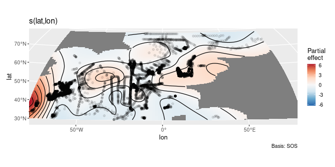
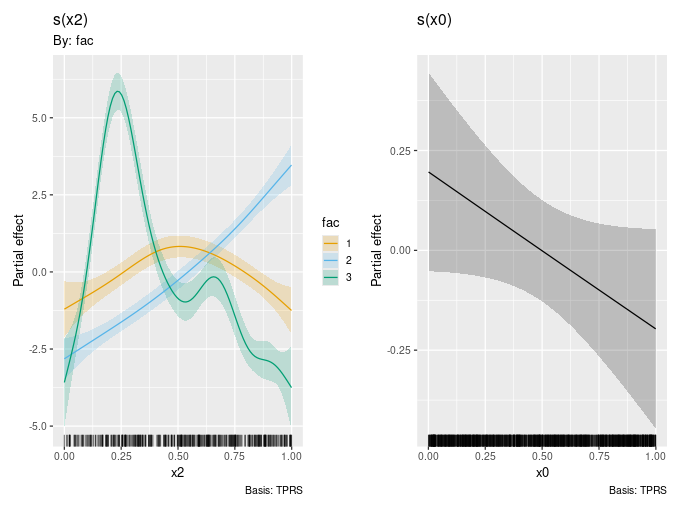

gratia 0.9.0
I am pleased to announce the release of gratia 0.9.0. This release has been over a year in the making and provides many new features as well as a more consistent user experience. Unfortunately, I have had to make a lot of breaking changes; nothing too egregious, but most user-facing functions are affected. This release represents a solid base to move towards gratia version 1.0.0. Here, I describe what I broke as well as outline some of the major new features in the package.
Breaking changes
Several of the main user-facing functions return user data along side the variables created by those functions. For example, smooth_estimates() returns the values of the covariates at which a smooth is evaluated.
library("mgcv")
library("gratia")
df <- data_sim("eg1", n = 500, seed = 2)
m <- gam(y ~ s(x0) + s(x1) + s(x2) + s(x3), data = df, method = "REML")
smooth_estimates(m) # evaluate all smooths# A tibble: 400 × 9
.smooth .type .by .estimate .se x0 x1 x2 x3
<chr> <chr> <chr> <dbl> <dbl> <dbl> <dbl> <dbl> <dbl>
1 s(x0) TPRS <NA> -1.01 0.322 0.000663 NA NA NA
2 s(x0) TPRS <NA> -0.955 0.299 0.0107 NA NA NA
3 s(x0) TPRS <NA> -0.902 0.277 0.0208 NA NA NA
4 s(x0) TPRS <NA> -0.848 0.257 0.0309 NA NA NA
5 s(x0) TPRS <NA> -0.794 0.239 0.0410 NA NA NA
6 s(x0) TPRS <NA> -0.741 0.224 0.0510 NA NA NA
7 s(x0) TPRS <NA> -0.687 0.210 0.0611 NA NA NA
8 s(x0) TPRS <NA> -0.633 0.199 0.0712 NA NA NA
9 s(x0) TPRS <NA> -0.580 0.190 0.0813 NA NA NA
10 s(x0) TPRS <NA> -0.526 0.184 0.0913 NA NA NA
# ℹ 390 more rows
smooth_estimates() returns info about the smooth, what is’s label is, what type it is, plus info relating to whether it is a factor by smooth. It isn’t unreasonable to think that a user might also use covariates with names type, for example, which would immediately cause a problem if they fitted a model with a s(x, by = type) smooth. We’d see a clash between the type that smooth_estimates() wants to add to the return object and the variable the user used which also needs to included in the return object.
Now, I should have foreseen this when I set about building gratia, but I didn’t, and so we arrive at March 2024 and the Great Renaming.
As you can see above, the variables that gratia’s functions add to returned objects are now prefixed with a period: .smooth instead of smooth. I also took the opportunity to be more consistent and clear about what variables are through their naming. Hence, smooth_estimates() now returns a variable .estimate where previously I have est.
Some functions have changed more than others. derivatives(), for example, used to have a data variable that stored the covariate values at which the derivative of a smooth was computed. This wasn’t very flexible unfortunately, and it wouldn’t work by smooths as at some point we’d need to also store the by variable name and info and you can’t easily stack factors with different levels without merging them. So now derivatives() more closely follows the conventions of smooth_estimates()
derivatives(m)# A tibble: 400 × 12
.smooth .by .fs .derivative .se .crit .lower_ci .upper_ci x0 x1
<chr> <chr> <chr> <dbl> <dbl> <dbl> <dbl> <dbl> <dbl> <dbl>
1 s(x0) <NA> <NA> 5.32 2.94 1.96 -0.441 11.1 6.63e-4 NA
2 s(x0) <NA> <NA> 5.32 2.94 1.96 -0.437 11.1 1.07e-2 NA
3 s(x0) <NA> <NA> 5.32 2.93 1.96 -0.413 11.1 2.08e-2 NA
4 s(x0) <NA> <NA> 5.32 2.89 1.96 -0.338 11.0 3.09e-2 NA
5 s(x0) <NA> <NA> 5.33 2.82 1.96 -0.196 10.8 4.10e-2 NA
6 s(x0) <NA> <NA> 5.33 2.71 1.96 0.00753 10.6 5.10e-2 NA
7 s(x0) <NA> <NA> 5.33 2.58 1.96 0.263 10.4 6.11e-2 NA
8 s(x0) <NA> <NA> 5.32 2.43 1.96 0.552 10.1 7.12e-2 NA
9 s(x0) <NA> <NA> 5.32 2.28 1.96 0.847 9.79 8.13e-2 NA
10 s(x0) <NA> <NA> 5.31 2.14 1.96 1.12 9.49 9.13e-2 NA
# ℹ 390 more rows
# ℹ 2 more variables: x2 <dbl>, x3 <dbl>
There are still some inconsistencies; no .type in the derivatives() output, but the .fs variable is present. Going forward, I’ll be addressing these inconsistencies, but I’ll be able to do them in a way that shouldn’t break people’s code.
I didn’t make these changes lightly; I appreciate that these naming changes will cause code to break, not least a lot of my own. However, I truly believe that how things work now in 0.9.0 is the right way to combine user data with function-generated variables. Let’s face it, if you name your variables with a . prefix, that’s a you problem, not a me problem.
The other major change is in how spline-on-the-sphere (SOS) smooths are plotted. With version 3.5.0 of the ggplot2 package, the developers introduced a new guides system. I had been using coord_map() to generate a plot of an estimated SOS spline that looked like a sphere. Unfortunately, since I started using coord_map() the ggplot2 devs soft-deprecated the function and that meant that the new guide system wasn’t applied to coord_map(), and the current gratia plot code was now generating warnings. So, I have switched to coord_sf(), which is much better all round, but the way projection information is supplied to the coord is very different. So gone are the projection and orientation in their place we have crs, default_crs, and lims_method.
data(chl, package = "gamair")
m_chla <- bam(chl ~ s(lat, lon, bs = "sos"), data = chl, method = "fREML",
discrete = TRUE)
draw(m_chla, crs = "+proj=wintri")
The current implementation isn’t 100% finished; I need to be much more careful than I am in how I create the grid of points to evaluate the SOS spline at when it gets near to +/-90 degrees latitude or +/- 180 degrees longitude. I also need to figure out how to show as much of the smooth as is possible with a given projection. Notice in the lower left corner of the plot above how the high chlorophyll are is clipped a little.
New features
This release of gratia brings a lot of new functionality. For the full details, see the change log. Below I highlight some of the more important improvements.
fitted_values() has started to be able to handle location-scale-shape families available in mgcv. I don’t yet have complete coverage of all such families, but as of 0.9.0, supported families are gaulss(), gammals(), gumbls(), gevlss(), shash(), twlss(), and ziplss(). The ocat() family is also now supported.
Soap film smoothers created with bs = "so" are now supported with their own plotting method. Previously, gratia would draw the smooth as a standard bivariate smooth.
response_derivatives() is a new function to estimate derivatives on the response scale and compute uncertainties in the estimates using posterior sampling. This is enabled by new function derivative_samples(), which is what does the actual posterior sampling.
On a related note, all the posterior sampling functions in gratia
posterior_samples(),fitted_samples(),predicted_samples(),derivative_samples(),smooth_samples(),simulate()
can now use the simple Metropolis Hastings sampler provided by mgcv, which instead of using a Gaussian approximation to the posterior, uses proposals from a Gaussian ot t distribution alternated with random walk proposals. And yes, posterior_samples() is a new function.
A new vignette on posterior sampling adds to the package documentation. It describes how and what we are sampling in relation to GAMs, and includes an example of the benefits of using the Metropolis Hastings sampler in some situations.
data_sim() gains a bunch of new functionality and (slightly) better documentation. The function can simulate data from a wider range of response distributions than previously, and it also includes several new “models”, known smooth effects, including data for use with mgcv’s new gfam() family, which allows you to model responses of mixed type (continuous, binary, count, etc.)
add_fitted_samples(), add_predicted_samples(), add_posterior_samples(), and add_smooth_samples() are new utility functions that add the respective draws from the posterior distribution to an existing data object for the covariate values in that object: obj |> add_posterior_draws(model).
ds <- data_slice(m, x2 = evenly(x2, n = 20))
ds |>
add_fitted_samples(model = m)# A tibble: 20 × 7
x2 x0 x1 x3 .row .draw .fitted
<dbl> <dbl> <dbl> <dbl> <int> <int> <dbl>
1 0.00361 0.488 0.501 0.494 1 1 3.46
2 0.0560 0.488 0.501 0.494 2 1 6.20
3 0.108 0.488 0.501 0.494 3 1 9.25
4 0.161 0.488 0.501 0.494 4 1 12.3
5 0.213 0.488 0.501 0.494 5 1 14.1
6 0.265 0.488 0.501 0.494 6 1 13.9
7 0.318 0.488 0.501 0.494 7 1 12.2
8 0.370 0.488 0.501 0.494 8 1 10.3
9 0.422 0.488 0.501 0.494 9 1 8.93
10 0.475 0.488 0.501 0.494 10 1 8.17
11 0.527 0.488 0.501 0.494 11 1 7.86
12 0.579 0.488 0.501 0.494 12 1 7.94
13 0.632 0.488 0.501 0.494 13 1 8.15
14 0.684 0.488 0.501 0.494 14 1 8.05
15 0.736 0.488 0.501 0.494 15 1 7.34
16 0.789 0.488 0.501 0.494 16 1 6.23
17 0.841 0.488 0.501 0.494 17 1 5.31
18 0.894 0.488 0.501 0.494 18 1 4.90
19 0.946 0.488 0.501 0.494 19 1 4.88
20 0.998 0.488 0.501 0.494 20 1 4.98
draw.gam() can now group factor by smooths for a given factor into a single panel, rather than plotting the smooths for each level in separate panels. This is achieved via new argument grouped_by.
df2 <- data_sim("eg4", seed = 2, n = 1000)
m2 <- gam(y ~ fac + s(x2, by = fac) + s(x0),
data = df2, method = "REML")
m2 |>
draw(grouped_by = TRUE)
For a full list of changes, see the change log.
Defunct and deprecated
I have finally taken the decision to remove evaluate_smooth() from gratia. This function, alongside fderiv(), was the original functionality of the package from before it was even called gratia. It has long been superseded by smooth_estimates() however, and it became too difficult to maintain it.
This version of gratia also sees the deprecation of evaluate_parametric_term() and datagen(). The former is the counterpart to evaluate_smooth() but for parametric model terms; this has been superseded by parametric_terms(). datagen() was an early attempt at data_slice() and I never really used it as it wasn’t very flexible or useful. These functions will be removed from gratia by version 0.11.0 or 1.0.0, whichever of those happens first.
Fin
Version 0.9.0 of gratia is now on CRAN. I hope you find the new version of gratia useful and can bear the annoyances of code breaking. If you have thoughts about the new release, what could be improved and changed, let me know in the comments or in a GitHub Issue.